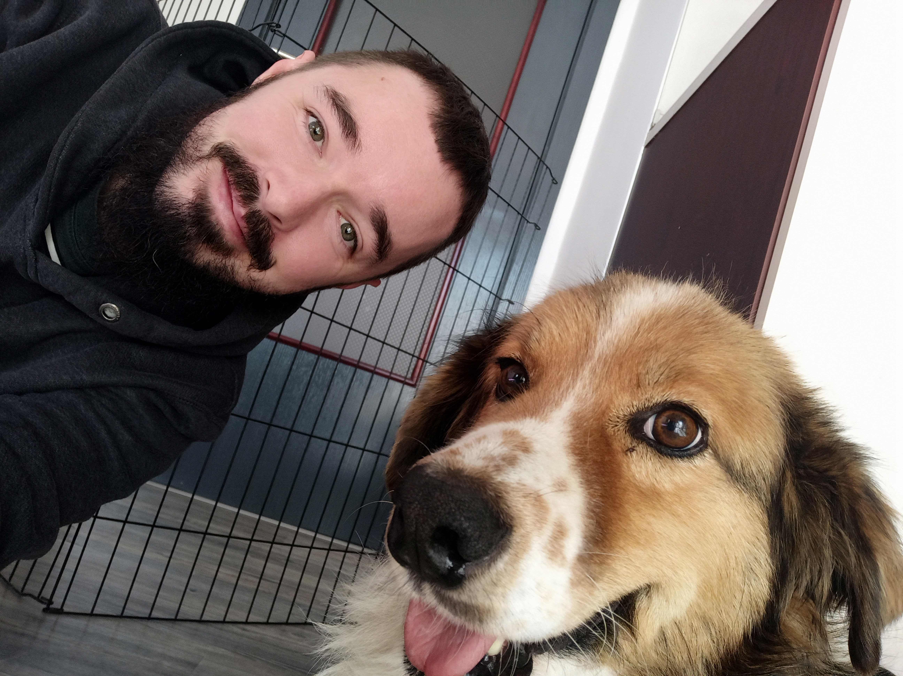

About FindARescue.ie
FindARescue.ie is Ireland's most comprehensive database of animal rescue organisations, shelters, and welfare groups. Our mission is to:
- Promote the incredible work of animal rescue organisations across Ireland
- Encourage pet adoption instead of purchasing
- Raise awareness of local wildlife welfare groups

Who we are
FindARescue.ie is a private, fully volunteer-led project. We don't receive any funding, grants, or sponsorships. We do not advertise and we do not sell any user data.
I created this website as a passion project after working with many amazing animal rescues and seeing how dedicated and hardworking these organisations are. Even though they work night and day to support animals, they never have enough support or resources.
Our goal:
To make it as easy as possible for people to find, support, and connect with animal rescue organisations throughout Ireland.
My goal is to shine a light on these organisations and ensure that the public is aware of the great work that animal rescue groups do. In turn I hope we can get more animals adopted instead of bought, more donations, more volunteers, and more support for animal welfare in general.
NB: FindARescue.ie is not a rescue or charity organisation and we will never reach out asking for donations. Report any suspicious messages immediately.
Who this website is for
This website is helpful for many people, including:
- Prospective pet adopters or foster homes
- People looking to surrender an animal
- Anyone who has encountered injured wildlife
- Animal rescue donors and volunteers
- Animal welfare advocates
We generally do not cover any corporate activity, including:
- Animal breeding, buying, selling
- Pet shops
- Service animals
- Grooming, walking, or training services
- Pest control
Contact us
If you're an animal rescue organisation that's not yet listed on our platform, or if you notice any information that needs updating, please get in touch. We're continuously expanding our database to ensure it remains the most comprehensive resource for animal rescue in Ireland.
We'd love to hear your feedback, suggestions, or any questions you might have.
Support us
FindARescue.ie is run entirely by myself with no advertising or sponsorship. Keeping the site online does come with a small cost each year:
If you'd like to help keep FindARescue.ie running, even a small contribution helps. Every cent goes directly towards running costs — nothing else.
- Hosting — €114.38 / year
- Domain — €36.99 / year
Contributors
I am so grateful to everyone who has contributed to FindARescue. These lovely people all helped the development of the website and I am extremely thankful for them:
Donators
- Emma
- Mary R.C.
- Túlio G.
Translators
- Ross
- Kev
- Feidhlimidh M.
- Malachi Ó'M.